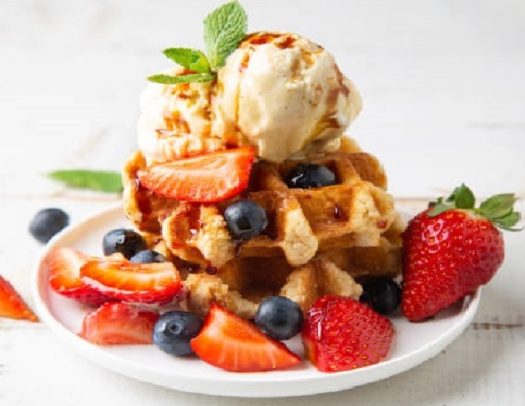
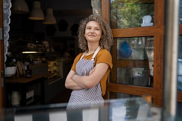
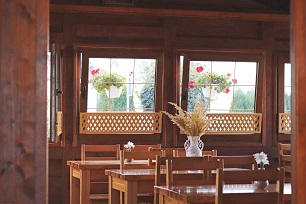

Kulttuurihistoriallisesti arvokas entisajan maalaiselämää edustavalla paikalla oleva Kesäkahvila Kastehelmi on ehdoton vierailukohde Pohjanmaalla. Se sijaitsee lähes kaupungin kupeessa, Laihian kunnassa, lyhyen automatkan päässä torilta. Idyllisessä kesäkahvilassa pääset herkuttelemaan suussa sulavilla, vastapaistetuilla makeilla ja suolaisilla vohveleilla. Täällä aika pysähtyy ja maisemat hurmaavat!
  